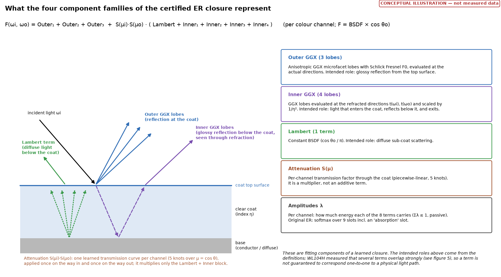
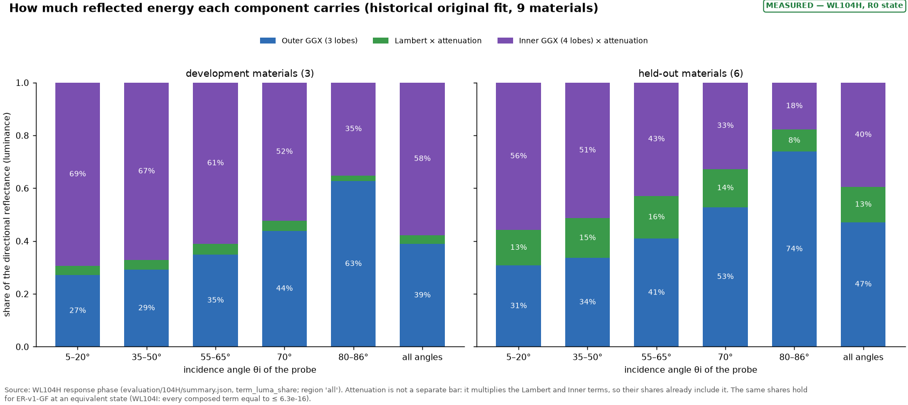
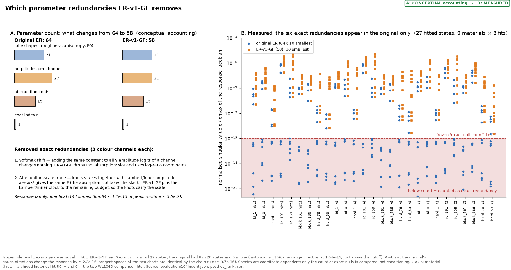
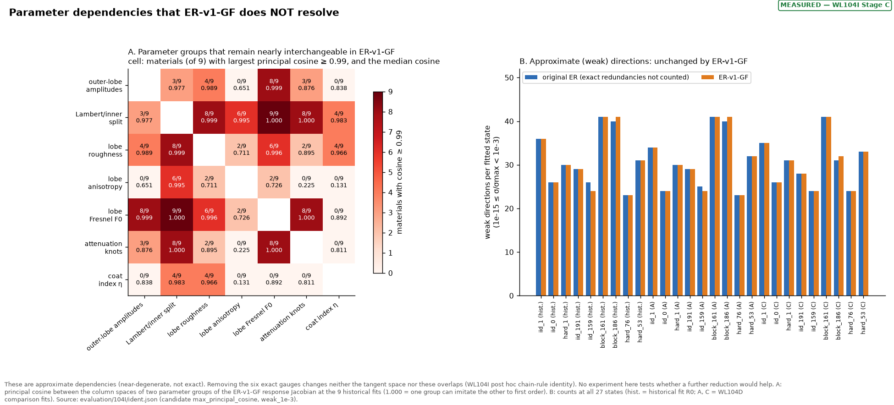
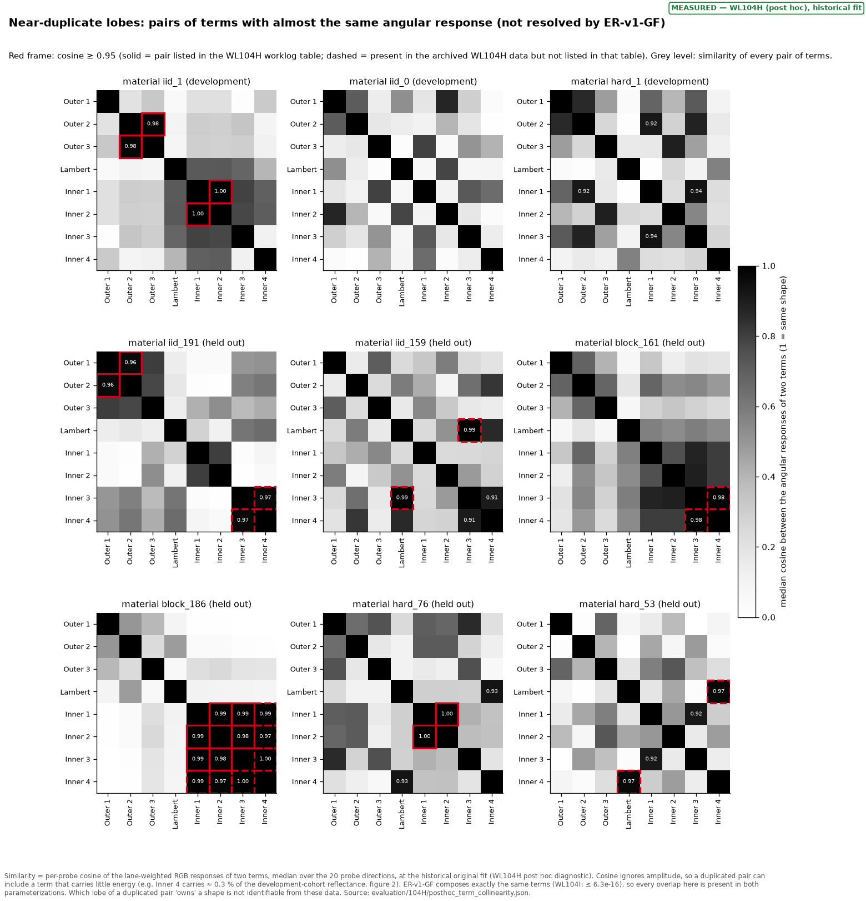
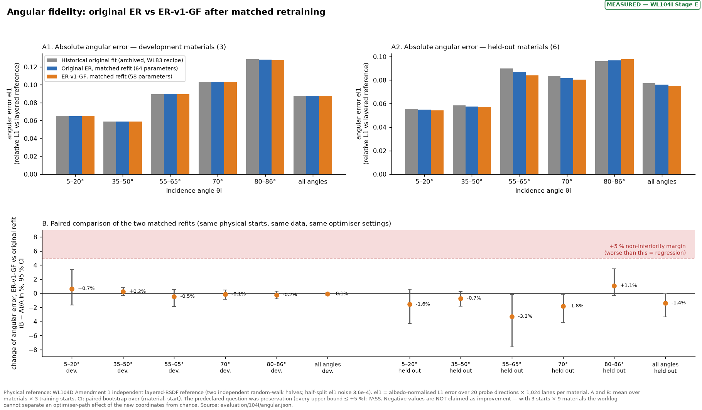
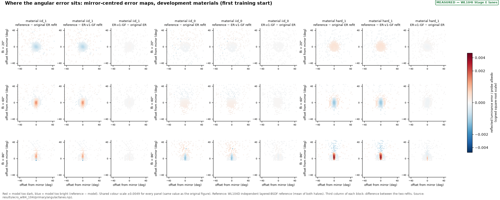
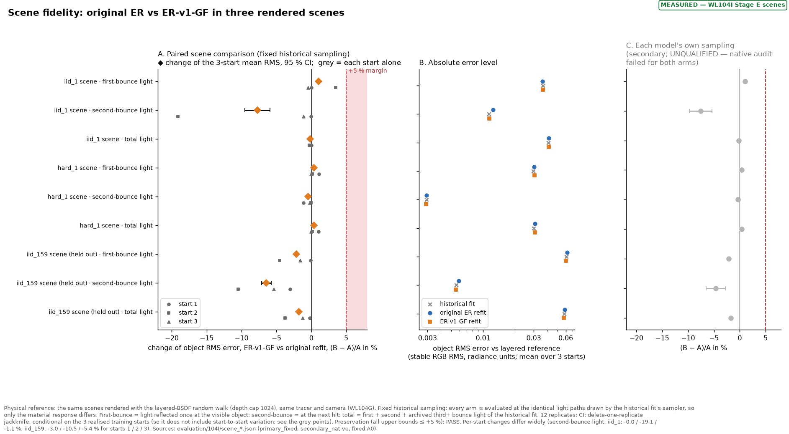
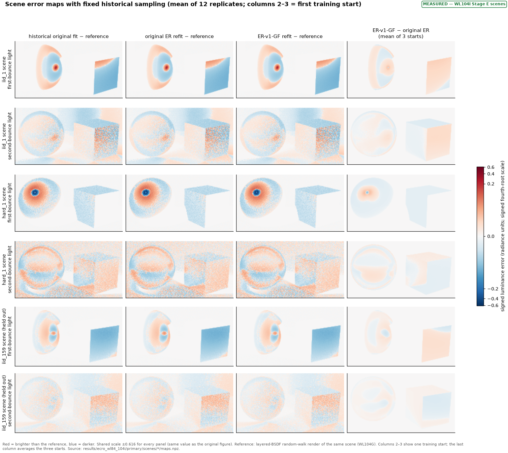
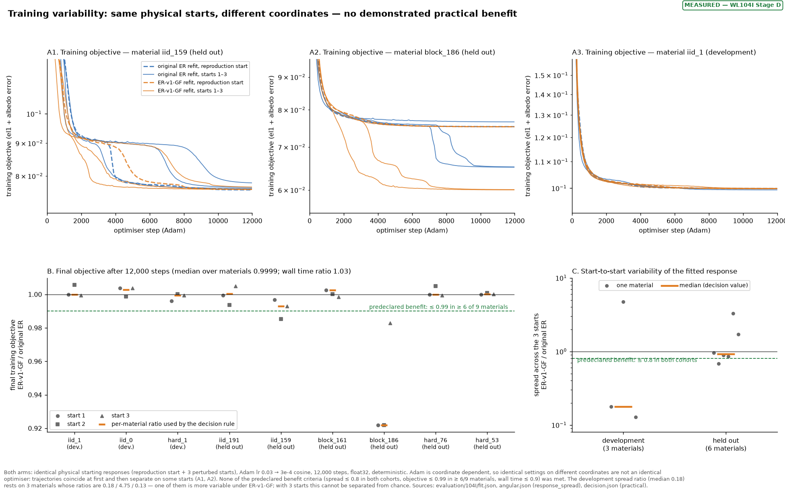

WL104I — ER-v1-GF: gauge-fixed parameterization of the certified ER closure
Reviewer presentation, readable version (2026-11-21). Presentation only: no measurement, baseline, protocol or verdict was changed. Batch record: Worklog 104I · design: ER-v1-GF design.
What was tested, in one paragraph
The certified ER closure (the learned local-material model) has 64 parameters, six of which are exact redundancies: changing them in a coordinated way leaves the material response unchanged. ER-v1-GF is a 58-parameter rewrite that removes those six redundancies and reaches exactly the same set of material responses. WL104I checked the equivalence, then retrained both versions under identical conditions and compared their accuracy against an independent physical reference. It also checked whether the new coordinates bring any practical benefit.
Comparison arms and references
| Name in figures | What it is |
|---|---|
| Historical original fit | The archived certified-ER fit (R0, WL83 direct-fit recipe), 64 parameters. Not retrained here. |
| Original ER refit | Original 64-parameter chart, retrained in WL104I (arm A1). |
| ER-v1-GF refit | Gauge-free 58-parameter chart, retrained in WL104I from the same physical starting responses as the original refit (arm B1). |
| Starts | One reproduction start (the historical recipe's initial state) plus three perturbed starts (start 1–3). Seeds are listed in figures_readable_manifest.json. |
| Angular physical reference | WL104D Amendment 1: an independent layered-BSDF random-walk reference with two independent halves, 9 materials × 20 probe directions × 1,024 lanes. |
| Scene physical reference | The same three scenes rendered with the layered-BSDF random walk (depth cap 1024), same tracer and camera (WL104G). |
Frozen decision (unchanged, from the worklog)
| Item | Label | Figure |
|---|---|---|
| Response-family equivalence | PASS | 3 (A, note) |
| Exact gauge removal | FAIL | 3: frozen numerical rule. One original-side direction sat at 1.04e-15 against a 1e-15 cutoff. Post hoc, ER-v1-GF has no exact null. |
| Training fidelity preservation | PASS | 6, 8 |
| Structural identifiability improvement | FAIL | 3, 4: frozen truncated-tangent test. Post hoc, the tangent spaces are identical. |
| Training stability / practical benefit | FAIL | 10 |
| Native proposal qualification | FAIL | 8 C. Affects both arms; the sampler defect predates WL104I. |
| ER-v1-GF candidate viability | NOT SUPPORTED | Under the frozen rule. Not adopted. Which reading governs is a human decision. |
Figures
1. What the model components represent
CONCEPTUALSchematic of the closure: three outer GGX lobes, four inner GGX lobes, a Lambert term, a per-channel attenuation curve, and per-term amplitudes.
Question: what do Outer GGX, Inner GGX, Lambert and Attenuation stand for in the model?
The roles come from the model definition and are not measured. Figures 2, 4 and 5 show that these terms overlap, so a term need not correspond one-to-one to a physical light path.

2. How much energy each component carries
MEASUREDWL104H, historical fit. Share of the directional reflectance by component group and incidence angle.
Question: which components matter, and where?
Inner lobes dominate near normal incidence and outer lobes dominate at grazing incidence. Attenuation is not a separate bar because it multiplies the Lambert and Inner terms. The same shares hold for ER-v1-GF at an equivalent state, because the composed terms are identical. Shares at the WL104I refit states were not measured.

3. Which parameter redundancies ER-v1-GF removes
CONCEPTUAL panel A, MEASURED panel B (WL104I Stage C, 27 fitted states).
Question: are the six exact redundancies of the original chart actually gone in ER-v1-GF?
Panel A is the 64 → 58 parameter accounting. Panel B shows that the original's six exact null directions sit at the float64 floor (1e-21 to 1e-15), while ER-v1-GF has none. The frozen rule still reads FAIL because one original-side direction measured 1.04e-15, just above the 1e-15 cutoff. Both the frozen label and the post-hoc reading are shown.

4. Parameter dependencies that remain
MEASUREDWL104I Stage C.
Question: does removing the exact redundancies also remove the approximate ones?
No. Parameter groups that can nearly imitate each other remain in ER-v1-GF, for example Lambert/inner split versus Fresnel, attenuation or roughness. The weak-direction counts are the same in both charts.

5. Near-duplicate lobes that remain
MEASUREDWL104H post-hoc diagnostic, historical fit, all 9 materials.
Question: which lobes have nearly the same angular shape, so that no data can say which of them "owns" that shape?
ER-v1-GF does not change these pairs. Solid frames mark pairs listed in the WL104H worklog table. Dashed frames mark pairs with cosine ≥ 0.95 that are present in the archived WL104H data but missing from that table (see "Missing evidence").

6. Angular fidelity after matched retraining
MEASUREDWL104I Stage E, against the independent layered reference.
Question: does ER-v1-GF keep the original's angular accuracy?
Yes, within the predeclared +5 % margin: every upper bound is ≤ +5 %. Negative point estimates in the held-out cohort are not claimed as an improvement. With 3 starts × 9 materials, an optimiser-path effect of the new coordinates cannot be separated from chance.

7. Where the angular error sits
MEASUREDWL104I Stage E lanes, development materials, first training start.
Question: do the two refits fail in the same places?
Yes. The error patterns around the mirror direction are nearly identical, and the difference between the refits (third column of each block) is small compared with either refit's error.

8. Scene fidelity
MEASUREDWL104I Stage E scenes.
Question: does ER-v1-GF keep scene-level accuracy, and how much does the result depend on the training start?
All upper bounds are ≤ +5 % under fixed historical sampling, so accuracy is preserved. The per-start points show that the large second-bounce changes come from individual starts. The confidence interval is conditional on the realised starts. Panel C, where each model uses its own sampling, is unqualified for both arms.

9. Scene error maps
MEASUREDWL104I Stage E scenes, mean of 12 replicates.
Question: where in the image are the errors, and how different are the two refits?

10. Training variability and practical benefit
MEASUREDWL104I Stage D.
Question: does the gauge-free chart train more stably, reach a lower objective, or run faster?
None of the predeclared benefit criteria was met. Trajectories from identical physical starts separate on some starts, because Adam depends on the coordinates. The development spread ratio of 0.18 rests on 3 materials, one of which is more variable under ER-v1-GF.

Missing evidence and limits of these figures
- Component-level response at the refit states. Per-term responses (figures 2 and 5) exist only for the historical fit (WL104H). For the WL104I refits, only Jacobian-level summaries were archived (figure 4). No per-term curve is drawn for the refits, and none was inferred.
- Discrepancy in the WL104H near-duplicate table. The WL104H worklog table lists 7 pairs. The archived
posthoc_term_collinearity.jsoncontains 14 pairs with median cosine ≥ 0.95, several involving Inner 4 or Lambert. Figure 5 shows all of them and marks which are listed. The reason for the omission is not recorded. The historical worklog is preserved unchanged. - Fitted attenuation curves. The fitted attenuation knots exist in
compiled_states.npz/fit_states.npzbut were not plotted. Figure 1 shows attenuation only conceptually. - Optimiser effect versus chance. This is not resolved: 3 starts, 9 materials, and no coordinate-invariant optimiser was run.
- Native-sampling comparison. It is unqualified, because the audit failed for both arms and the support defect is also present in the historical fit.
Provenance
All figures are produced by review104i_figures.py. The script reads only archived files, each checked against the frozen WL104I / WL104H manifests: 19 inputs. It recomputes nothing from a model. 37 consistency checks against decision.json and the stage files all pass. Values, hashes and the ID mapping are in figures_readable_manifest.json.
The original package figures stay unchanged in this folder (hash-listed in manifest.json):
| Original figure | Replaced in this presentation by |
|---|---|
| training_histories.png | Figure 10 |
| jacobian_spectra.png | Figures 3, 4 |
| angular_el1_bands.png | Figure 6 |
| angular_residual_maps.png | Figure 7 (same data, same colour scale) |
| scene_relative_rms.png | Figure 8 |
| scene_error_maps.png | Figure 9 (same data, same colour scale) |


Figures 1, 2 and 5 are new: concept and WL104H supporting evidence.